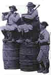

|
FIRST MILLER
Bretons, let us all make a song, O gay!
Bretons, let us all make a song.
On Low Brittany, we won't be long, O!
- O, come and listen, and listen, all of you ;
Here is a song to listen to. (twice)
-
Men of Low Brittany have made, O gay!
A pretty cradle finely inlaid, O!
- O, come and listen, etc.
A pretty ivory cradle,
With gold nails and silver staples O!
With gold and silver nails adorned,
But as they rock it, they sigh and mourn O!
They are a-rocking it and sigh.
Sour tears are pouring from their eyes O!
Bitter are the tears that they shed :
The child in it, alas,is dead O!
It's dead and it died long ago;
But they rock it on and sing low O!
They rock it on and rock it on.
They've lost common sense and reason O!.
Reason and common sense they've lost,
And in this world all happiness O!
There are in store for a Breton
Only regrets and affliction O!
Regrets because he bears in mind
How things have been in olden time O!
SECOND MILLER
In olden times one did not hear
Flocks of strange green birds cawing here O!;
Green birds of the Tax Collection,
With gaping mouth and presumption O!
With taxes overflew their vaults,
Neither on tobacco, nor on salt O!
Sat and tobacco now are dear,
They cost half of it in olden years O!
We did not, all over the place,
See the accursed excise men race O!
Race and rush as so many gads ,
When they smell cider in our kegs O!
On every barrel duties are paid
Save if pipers on them have played O! -

FIRST PILLAOUER (ragman)
Our youths were not sent formerly
To fight in far, allien country O!
In allien country, sure to be
Killed, far from Lower Brittany O!.
FIRST PLOUGHMAN
In Low Brittany there were men
In their manors to fend the land O!
Now at the table's upper end
The manor's cowherd will command O!
When a poor to the manor came,
To turn him off had been a shame O!
The lady would fetch from the chest,
A pouchful oatmeal for her guest O!
She gave bread, if you were hungry,
If you were ill, some remedy O!
Now the bread and drugs are missing
And the poor the manor shunning O!;
With their heads held down they go 'way.
Dogs at the gate hold them at bay O!;
They're afraid of the dogs thap leap
Onto their poor mothers who weep O!
SECOND PLOUGHMAN
The year she became a widow.
Was to my mother year of woe O!
For, if she had born nine children,
She had no bread to feed them on O!
- Whoever has to give will give;
I just have to find where they live O!
I will go to the newcomer
Whom God keep in wealth and honour O!
- Good day, Master of the manor,
Be good, I ask you a favour O!
Would you to be so good, as I said,
As to give my children some bread O?
To my nine children give some bread,
They have been fasting for three days O!
When he heard that, the newcomer
Has said to my hapless mother O!
- Go you away from my threshold,
Or I unleash on you my dog O! -
She was afraid and went away.
As she walked, she wept on her way O!
Oh, how she wept, the poor widow:
- What shall I give my children, now, O? ?
My poor children, so dear to me,,
When they say: " Mother, we're hungry O! "
She knew not where she was going,
Her eyes with tears overflowing O!
|
Walking home, she has halfway, when
She met the lord of the domain O!
The lord of manor Pratuloh,
Who went doe-hunting to Wood Loh O!
Who went doe hunting to the Wood.
On a bay charger there he rode O!
- O my dear, good woman, tell me
Why do you cry so bitterly O? ?
- I cry on my hapless children,
For I have no bread to give them O!
- Do not cry, my dear, good woman;
Here, for you, money to buy some O.-
God's blessing be upon this lord !
He is a man, upon my word O!
Even if it should be to death
I'd follow him, upon my faith O!
THIRD PLOUGHMAN
Yes, these are good folks, listening
To people of every standing O!
To all standings they lend an ear
And comfort whoever sheds tears O!
FOURTH PLOUGHMAN
They treat their tenants decently
Would not dismiss them abruptly O!
To which new landowners are used
Keen on increasing a fortune, O!
Disregarding in doing so,
That they are sure to Hell to go O!
FIFTH PLOUGHMAN
They would never make sell and clear
Their tenant farmers' bed and gear O!
SECOND PILLAOUER
They never would stoop so far down
As to fine beggars with two crowns O! ;
Two crowns to make good for the loss
Of grass, where their cows used to browse O!.
THIRD PILLAOUER
They would not prohibit hunting;
But would ask all the neighbouring O!
SIXTH PLOUGHMAN
What they owe, they pay, every bit.
Their word is as good as a writ O!
They know not of rapacity,
The disease of the new gentry O!.
SEVENTH PLOUGHMAN
The new noblemen are so harsh.
The old ones were better by far O!
The old ones, though fiery-tempered,
To the peasants were good-hearted O!
But the old ones, O woe is me!
Are rare compared to formerly O!.
There are far more man-devourers,
Than men that are good to the poor O!
THIRD PILLAOUER
The poor always will be the poor
Whom the city dwellers devour O!
FIRST MILLER
And yet as old saying had it
« - The worst soil would yield the best wheat O!
When the old kings would come back home,
To rule the country from their thrones O!»
The old kings have returned by now,
But not the times of long ago O!.
The olden times never came back.
We have been misled, hapless pack O!
Hapless pack, we have been deceived!
In bad soil may thrive no good seed O!
The world got harsher,a good bit;
There is no use denying it O!
Only lunatics may have thought
That ravens would turn into doves O!
Who could expect lily flowers
To spring off from the roots of ferns O!
Who could expect glittering gold
Off the tops of high trees to fall O! .
Off the high trees nothing falls down
Save withered leaves onto the lawn O! ;
Naught, but dry leaves, off tree and shrub,
Giving way to new leaves in bud O;
Naught but dry leaves, as gold as brown,
For the poor to make their bed on O! .
Dear poor, herein is your solace:
An eider down quilt you'll have once, O!;
Instead of a bed of bracken,
An ivory bed in Heaven O!
SECOND MILLER
On the eve of Assumption day,
This song was made after dinner O!
It was made by the twelve of us,
Who dance on the knoll near the church O!
Three of us gather rags and shreds,
Seven sow rye, two grind 't for bread O!
O come and listen and listen, all of you!
We've made this song, earnest and new! -
Transl. Christian Souchon (c) 2007
|